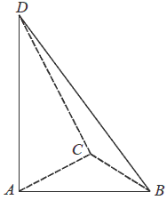
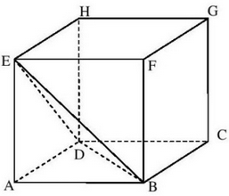

Różne zadania z ostrosłupów
Ostrosłup ma \(18\) wierzchołków. Liczba wszystkich krawędzi tego ostrosłupa jest
równa
A.\( 11 \)
B.\( 18 \)
C.\( 27 \)
D.\( 34 \)
D
Dany jest sześcian \(ABCDEFGH\). Siatką ostrosłupa czworokątnego \(ABCDE\) jest

B
W ostrosłupie \(ABCS\) podstawa \(ABC\) jest trójkątem równobocznym o boku długości
\(a\). Krawędź \(AS\) jest prostopadła do płaszczyzny podstawy. Odległość wierzchołka \(A\) od
ściany \(BCS\) jest równa \(d\). Wyznacz objętość tego ostrosłupa.
\(V=\frac{a^3d}{4\sqrt{3a^2-4d^2}}\)
Podstawą ostrosłupa \(ABCD\) jest trójkąt \(ABC\). Krawędź \(AD\) jest wysokością
ostrosłupa (zobacz rysunek).  Oblicz
objętość ostrosłupa \(ABCD\), jeśli wiadomo, że \(AD = 12\), \(BC = 6\), \(BD = CD = 13\).
\(V=48\)
Podstawą ostrosłupa \(ABCDS\) jest romb \(ABCD\) o boku długości \(4\). Kąt \(ABC\)
rombu ma miarę \(120^\circ \) oraz \(|AS|=|CS|=10\) i \(|BS|=|DS|\).
Oblicz sinus kąta nachylenia krawędzi \(BS\) do płaszczyzny podstawy ostrosłupa.
\(\sin \alpha =\sqrt{\frac{22}{23}}\)
Podstawą ostrosłupa \(ABCDW\) jest prostokąt \(ABCD\). Krawędź boczna \(DW\) jest
wysokością tego ostrosłupa. Krawędzie boczne \(AW\), \(BW\) i \(CW\) mają następujące długości:
\(|AW| = 6\), \(|BW| = 9\), \(|CW| = 7\). Oblicz objętość tego ostrosłupa. 
\(8\sqrt{10}\)
Podstawą ostrosłupa \(ABCDS\) jest kwadrat \(ABCD\). Wysokość \(SE\) ściany bocznej
\(ADS\) jest jednocześnie wysokością ostrosłupa, a punkt \(E\) jest środkiem krawędzi \(AD\) (zobacz
rysunek). Pole ściany \(ADS\) jest równe \(12\) cm2, a objętość ostrosłupa jest równa
\(48\) cm3. Oblicz miarę kąta nachylenia krawędzi bocznej \(CS\) do płaszczyzny podstawy
ostrosłupa. Wynik zaokrąglij do \(1^\circ \). 
\(31^\circ \)
Podstawą ostrosłupa \(ABCDE\) jest kwadrat \(ABCD\). Punkt \(F\) jest środkiem
krawędzi \(AD\), odcinek \(EF\) jest wysokością ostrosłupa (patrz rysunek). Oblicz objętość
ostrosłupa, jeśli wiadomo, że \(|AE|=15\), \(|BE|=17\). 
\(\frac{64\sqrt{209}}{3}\)
Jeżeli ostrosłup ma \( 10 \) krawędzi, to liczba ścian bocznych jest równa
A.\(5 \)
B.\(7 \)
C.\(8 \)
D.\(10 \)
A
Ostrosłup i graniastosłup mają równe pola podstaw i równe wysokości. Objętość
ostrosłupa jest równa \( 81\sqrt{3} \). Objętość graniastosłupa jest równa
A.\(27 \)
B.\(27\sqrt{3} \)
C.\(243 \)
D.\(243\sqrt{3} \)
D
Z sześcianu \( ABCDEFGH \) o krawędzi długości \( a \) odcięto ostrosłup \( ABDE \)
(zobacz rysunek).  Ile razy objętość
tego ostrosłupa jest mniejsza od objętości pozostałej części sześcianu?
A.\( 2 \) razy
B.\( 3 \) razy
C.\( 4 \) razy
D.\( 5 \) razy
D
Na rysunkach poniżej przedstawiono siatki dwóch ostrosłupów.  Pole powierzchni całkowitej
ostrosłupa o krawędzi \( a \) jest dwa razy większe od pola powierzchni całkowitej ostrosłupa o
krawędzi \( b \). Ile razy objętość ostrosłupa o krawędzi \( a \) jest większa od objętości
ostrosłupa o krawędzi \( b \)?
Pole powierzchni całkowitej
ostrosłupa o krawędzi \( a \) jest dwa razy większe od pola powierzchni całkowitej ostrosłupa o
krawędzi \( b \). Ile razy objętość ostrosłupa o krawędzi \( a \) jest większa od objętości
ostrosłupa o krawędzi \( b \)?
Pole powierzchni całkowitej
ostrosłupa o krawędzi \( a \) jest dwa razy większe od pola powierzchni całkowitej ostrosłupa o
krawędzi \( b \). Ile razy objętość ostrosłupa o krawędzi \( a \) jest większa od objętości
ostrosłupa o krawędzi \( b \)? A.\( \sqrt{2} \)
B.\( 2 \)
C.\( 2\sqrt{2} \)
D.\( 4 \)
C
Podstawą ostrosłupa \(ABCDS\) jest prostokąt, którego boki pozostają w stosunku \(3
: 4\), a pole jest równe \(192\) (zobacz rysunek). Punkt \(E\) jest wyznaczony przez przecinające
się przekątne podstawy, a odcinek \(SE\) jest wysokością ostrosłupa. Każda krawędź boczna tego
ostrosłupa jest nachylona do płaszczyzny podstawy pod kątem \(30^\circ\). Oblicz objętość
ostrosłupa. 
\(V=\frac{640\sqrt{3}}{3}\)